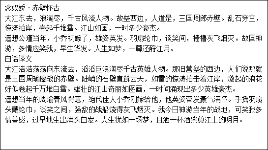
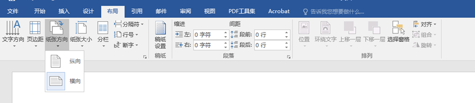
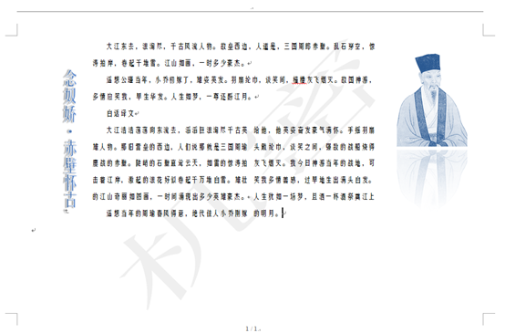
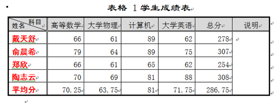
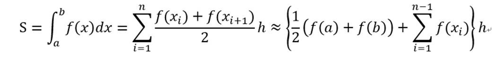

上机实验
项目一、Word的基本操作
一、实验目的
1．熟悉WORD2016工作界面；
2．掌握文本格式，段落格式的设置，文本中的插入、改写操作；
3．掌握页面布局方法；
4．掌握图片，文本框的使用；
二、实验步骤
启动Word2016，系统自动创建名为“文档1”的空白文档。输入并录入下面所示的文本内容。

（1） 进行页面设置。
a. 切换到功能区中的“布局”选项卡，如图 61所示，点击“页面设置”选项组中的“纸张方向”按钮，在下拉选项中选择“横向”。其他使用默认设置。
b. 点击“页边距”按钮，在下拉选项中选择选择“自定义边距”。在“页边距”选项卡中输入“页边距”数值：“上”3厘米，“下”2.5厘米， “左”2.5厘米，“右”2.5厘米。其他使用默认设置。

（2） 文本格式与段落格式的设置。切换到功能区中的“开始”选项卡。点击 “编辑”选项组中 “选择”按钮，选中“全选”项，选中文件中所有项目。在“字体”选项组中设定“字体”为“方正姚体”、“字号”为“五号”；点击“段落”选项组右下方箭头，弹出 “段落”对话框。缩进属性中“特殊格式”设定为“首行缩进”，“缩进值”为“2字符”；间距属性中“行距”设定为“固定值”，“设置值”为“25磅”。其他使用默认设置。
（3）
使用文本效果修饰标题。用鼠标选中标题“念奴娇•赤壁怀古”，点击“段落”选项组中的居中按钮，使标题居中。在“字体”选项组将字号改为“一号”，点击“文本效果”按钮，应用效果“填充-白色，轮廓-着色1，发光-着色1”。
（4）
插入页码。切换到功能区中的“插入”选项卡，在“页眉和页脚”选项组中按下“页码”按钮。在“页面底端”的选项列表表中选取“加粗显示的数字2”。
（5）
插入图片。切换到功能区中的“插入”选项卡，在“插图”选项组中点击“图片”按钮 ，在“插入图片”对话框中浏览选中图片“苏轼.jpg”。
，在“插入图片”对话框中浏览选中图片“苏轼.jpg”。
（6）
设置图片的文字环绕方式。点击选中图片“苏轼.jpg”，切换到功能区中的“格式”选项卡。在“排列”选项组中点击“位置”按钮，在下拉列表项中的“文字环绕”下面选中：“顶端居右，四周型文字环绕”。
（7）
调整图片大小。在“格式”选项卡，“大小”选项组中，更改形状高度为5厘米，然后回车，Word会自动调整宽度。
（8）
设置图片格式。鼠标右键点击图片，在弹出的右键菜单中选中“设置图片格式”选项，弹出“设置图片格式”对话框。
在“效果”选项卡下：
a.
点击“映像”，设定：“大小”-60%；“距离”-5磅。
b.
点击“发光”，设定：发光“颜色”-白色，“大小”-26磅，“透明度”-60%。
c.
点击“柔化边缘”，设定：柔化边缘“大小”-8磅。
在“图片”选项卡下
d.
点击“图片更正”，设定：“锐化”-60%，“亮度”-15%。
e. 点击“图片颜色”，在重新着色“预设”下拉选项列表中选择“蓝色，个性色1，浅色”。
（9）
文本框的使用。选中标题“念奴娇•赤壁怀古”，切换到功能区中的“插入”选项卡，按下“文本”选项组的“文本框”按钮
，选择“绘制竖排文本框”，将标题转化为文本框。选中文本框，在“格式”选项卡中按下“形状轮廓”按钮，选择“无轮廓”，去掉文本框的框线，适当调整文本框大小。
（10）
文本分栏。在文本最后加入一个回车。选中最后两段文字，（注意不要包括最后一个回车，之后一个孤立回车是为了截止分栏。），点击“布局”选项卡中的“分栏”按钮，在下拉选项中选定“两栏”。再点击“分栏”按钮，在下拉选项中选择“更多分栏”，在“分栏”对话框中设定“间距”为“4字符”，其他使用默认设置。
（11）
样张如下图所示。存盘，保留结果。切换到功能区的“文件”选项卡，选择“另存为”命令，输入文件名“赤壁怀古”

图 62样张
项目二 表格，公式的使用
一、实验目的
1．熟悉Word 2016工作界面；
2．掌握Word 2016的表格编辑方法；
3．掌握Word 2016公式编辑的方法
二、实验内容
1.创建和编辑表格
（1） 创建文档“表格与公式”，然后录入如下表格，选择“插入”选项卡中的表格按钮，在弹出的“插入表格”对话框中用鼠标画出一个5X7大小的表格，然后点击鼠标左键，输入下面的表格内容。
|
姓名 |
高等数学 |
大学物理 |
计算机 |
大学英语 |
|
戴天舒 |
66 |
61 |
89 |
62 |
|
张世杰 |
57 |
75 |
84 |
88 |
|
俞晨希 |
79 |
64 |
89 |
75 |
|
卢知远 |
79 |
74 |
78 |
72 |
|
郑欣 |
66 |
61 |
65 |
62 |
|
陶志云 |
70 |
69 |
81 |
88 |
（2） 选中在最后一列的右边插入一列，列标题为“总分”；在表格最后增加一行，行标题为“平均分”。
提示：利用表格工具-布局中相应功能完成行列添加。
（3） 删除“张世杰”和“卢知远”所在行。
（4） 利用公式计算学生总分（函数Sum(left) ）；计算各科平均分，保留两位小数（函数Average(above) ）。
提示：利用表格工具-布局中的公式进行公式计算。
（5） 在“总分”列右侧插入一列，列标题为“说明”，合并该列的其他单元格。
（6） 为表格左上角单元格绘制斜线表头，并设置行标题为“科目”。列表题为“姓名”
提示：选中需要绘制斜线表头的表格，选择表格工具-设计-边框按钮，在下拉菜单中选择斜下框线，即可绘制斜线表头。然后根据表头位置调整标题位置。
2．设置表格格式
（1） 为表格增加标题文字“学生成绩表”，居中、隶书、三号字、加粗。
提示：利用添加题注功能（用“引用”选项卡-“题注”分组-“插入题注”命令）
（2） 表格的对齐方式为居中；第1行背景色“白色，背景1，深色15%”（选中该行，右击，选择“边框和底纹”命令，在弹出对话框中的“底纹”选项卡中设置），高度0.9厘米，文字中部居中；后续各行行高为0.7厘米（选中该行，右击，选择“表格属性”命令，在弹出对话框中的“行”选项卡中设置）。
（3） 行列标题文字均为黑体、小四号字；姓名文字加粗、居中、红色；
（4） 所有成绩数据居右，小四号字，宋体。
（5） 表格外边框设为2.25磅单实线（在表格中右击，选择“边框和底纹”命令，在弹出对话框中的“边框”选项卡中设置，注意用“虚框”来设置），第1行下边框和第1列右边框为1.5磅双实线（选中该行，右击，选择“边框和底纹”命令，在弹出对话框中的“边框”选项卡中设置，注意用“自定义”来设置）。
（6） 调整各列的宽度，第1列的宽度为2.2厘米（选中该列，右击，选择“表格属性”命令，在弹出对话框中的“列”选项卡中设置）。平均分布各科目成绩列的宽度（选中相应列，右击，选择“平均分布各列”命令）。
（7） 调整斜线表头文字位置，字体为黑体，5号。提示：利用字体命令中的位置选项来调整文字位置（在“开始”选项卡“字体”分组右下角单击，在出现的“字体”对话框“高级”选项卡中的“位置”处进行设置）。
3．最终表格样张

4．公式录入
在很多的场合下，经常需要在文档中录入数学公式、化学方程式等，方法如下：
（1） 在功能区“插入”选项卡“符号组”中，单击“公式”命令，
（2） 在弹出的“公式”面板中选择“插入新公式”命令，
（3） 利用图 63所示的公式工具完成定长的梯形法积分公式。

图 64定长的梯形法积分公式